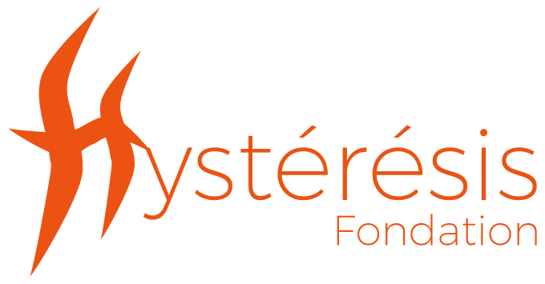

Les alumni
Cohorte 1
Les alumni de
Conversations Inspirantes
Des talents, des trajectoires et des possibilités
Explorer les profils
↓
Découvrir un parcours
↗
Explorer les parcours
Rechercher un profil
Type d’opportunité
Toutes les opportunités
Réinitialiser
Ma sélection uniquement
Activez JavaScript pour explorer les profils.
Ajouter à ma sélection
Fermer
×
← Précédent
Suivant →